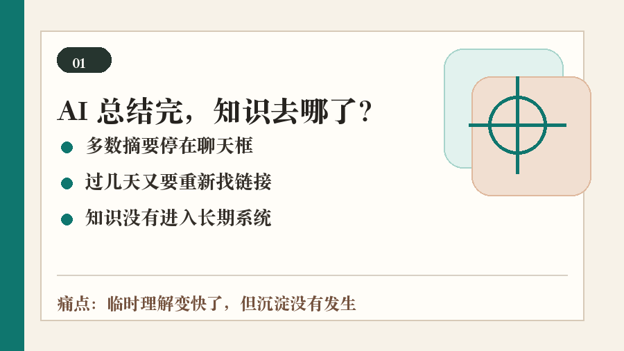
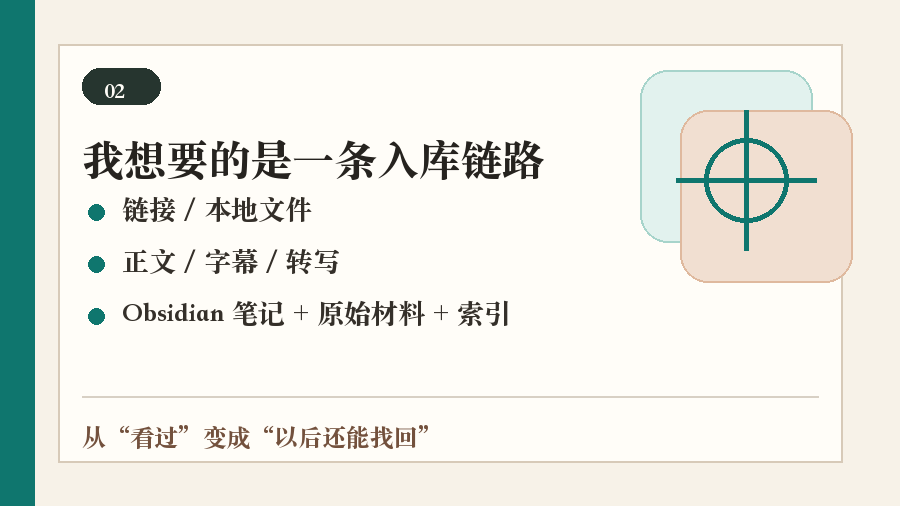
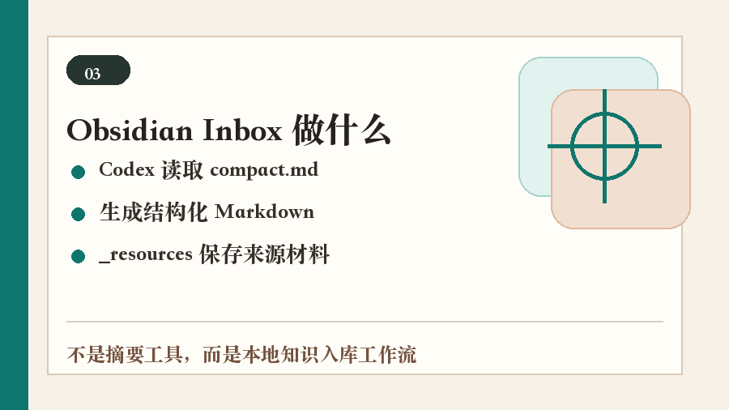
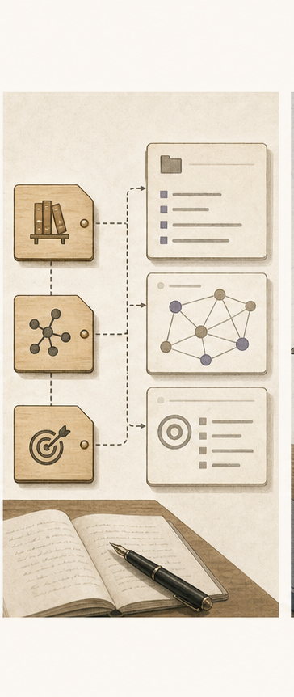
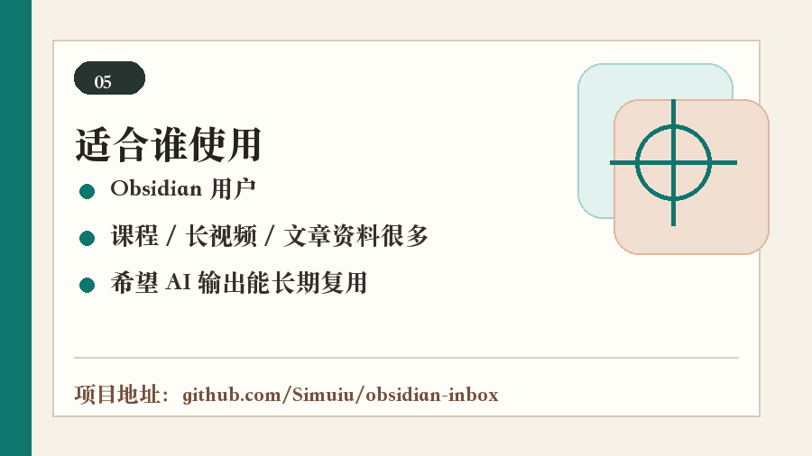

我以前最大的问题不是不会用 AI 总结，而是总结完以后根本找不回来。于是我把 Codex 接进 Obsidian，做了一个把文章、视频和本地资料整理进自己知识库的小工具。

我以前很爱让 AI 总结东西。
看到一篇长文，丢进去；看到一个视频，丢进去；买了课、听了分享，也丢进去。
当时确实省时间。
但过几天我想找某个观点，经常会卡住：它到底在哪个聊天窗口里？原链接是哪一个？当时那段字幕或原文还在不在？
最烦的是，有些内容我明明总结过，最后还是要重新找链接、重新发给 AI、重新整理一遍。
这件事让我意识到：我缺的不是又一个摘要，而是一个能把资料放回知识库里的入口。

我的资料来源很杂：B 站视频、公众号文章、网页、本地课程、会议录音，还有一些临时收藏的链接。
以前我会先收藏，等有空再整理。结果你也知道，基本没有那个“有空”。
所以我想要的其实很简单：我把链接或本地文件丢进去，它先把正文、字幕或转写准备好，再让 Codex 写成一篇 Obsidian 笔记，同时把原始材料也留下。
下次我再找这条资料，不用翻聊天记录，也不用猜关键词，直接从 Obsidian 的索引里进。

这个小工具叫 Obsidian Inbox。
它现在做的事情不复杂：先在本地准备资料包，再让 Codex 按固定结构写 Obsidian 笔记。
一条资料进来后，最后不只是得到一段“本文主要讲了什么”。它会变成一个文件夹：里面有主笔记，也有 _resources，用来放原始正文、字幕、转写或本地文件路径。
我最需要的就是这个结果。
因为一篇笔记如果没有来源、没有原始材料、没有索引入口，过一段时间还是会变成孤岛。

我没有把它包装成“全平台一键导入”。
听起来很厉害，但不真实，也不安全。
很多平台有登录、验证码、付费墙和版权边界。这个工具不会宣传自己能绕过这些限制。
它的原则反而比较保守：能拿到公开正文或字幕，才继续整理；拿不到可靠材料，就保留失败状态，不硬编一篇看起来很完整的笔记；Obsidian Vault、Markdown 和原始材料默认都在本地。
对我来说，知识库工具最重要的不是显得自动化，而是别把不确定的东西伪装成确定。

如果你只是偶尔总结一篇文章，它可能有点重。
但如果你已经在用 Obsidian，或者经常看长视频、课程、技术文章、会议材料，又总觉得“收藏很多，真正沉淀很少”，它会比较适合你。
我做它的目的不是替我思考，而是替我完成那部分最容易拖延的整理动作：建文件、归档材料、写初稿、补索引。
真正有价值的地方，是它把“我看过”往前推了一步，变成“我以后还能找回来”。

项目地址：https://github.com/Simuiu/obsidian-inbox